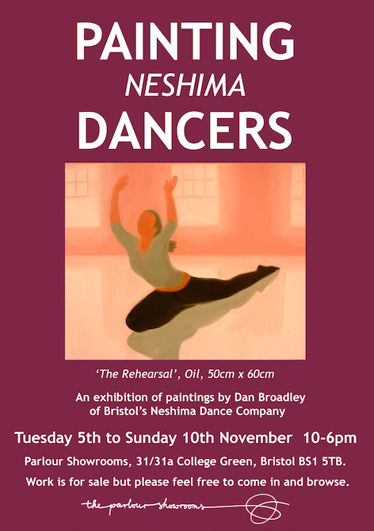

Exhibitions and Events
Current/Upcoming Exhibitions
-
PAINTING NESHIMA DANCERS
5th through 10th November 2013
The Parlour Showrooms
31/31a College Green Bristol BS1 5TB
For more information, visit www.parlourshowrooms.co.uk

Previous Exhibitions
- 2013 Festival of Stone, Bristol harbour side.
- 2010/2011 Affordable Art Fair, London.
- 2010/2011 Hybrid Gallery, Honition, Devon.
- 2009 Mythic Gardens Sculpture Exhibition, Dartmoor.
- 2009 Chapel Row Gallery, Bath.
- 2008 Widcombe Studios, Bath.
- 2008 Walcot Chapel, Bath.
- 2008 Bath Fine Art, Bath.
- 2008 Bradford on Avon Festival.
- 2008 Bath Society of Artists, Bath.
- 2004 Lena Boyle fine-art, Chelsea. (Painting)
- 2003 Churzee Gallery. (Sculpture)
- 2000 Lena Boyle fine-art, Chelsea. (Painting)
- 1999 Teddington Arts Fair. (Painting)
- 1998 Blenheim Studios. (Painting)
- 1992 Barnes Community hall. (Painting)
- 1991 Arundel Arts festival. (Painting)
- 1991 Horsham Arts Centre. (Painting)
- 1990 Hicks Gallery, Wimbledon. (Painting)
Collections
- Julian & Sarah Royle, Woodbridge, Suffolk. (Sculpture)
- Beryl Groombridge, Wimbledon. (Sculpture)
All works ©2006 Dan Broadley. All rights reserved.